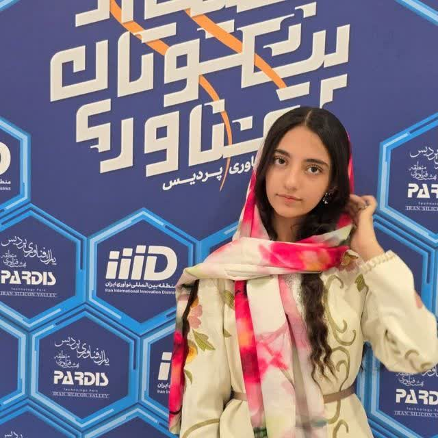

01
Smart Billboard
An intelligent advertising system using Computer Vision and AI to analyze audience interactions and support data-driven advertising decisions.

AI Developer • Robotics • Web Designer
AI Developer, Robotics Enthusiast and Web Designer with 2 years of programming experience. Focused on Artificial Intelligence, Deep Learning, Computer Vision, Robotics and innovative software development.
I'm an AI Developer, Robotics Enthusiast and Web Designer with 2 years of experience in programming and technology.
My work focuses on Artificial Intelligence, Machine Learning, Deep Learning, Computer Vision, Robotics and Software Development.
I enjoy transforming ideas into practical technological solutions, developing intelligent systems and exploring the connection between software, AI and robotics.
Throughout my learning journey, I have developed various projects, including AI chatbots, smart advertising systems, intelligent library platforms, face recognition systems and medical prediction models.
I achieved a Silver Medal in an international competition in Turkey in 2026 and have earned specialized certificates in Artificial Intelligence, programming and Web Development.
Artificial Intelligence × Robotics × Software × Creativity
AI & Machine Learning
Robotics & Intelligent Systems
Frontend & Backend
An intelligent advertising system using Computer Vision and AI to analyze audience interactions and support data-driven advertising decisions.
Development of chatbot applications designed to interact with users and provide automated responses using AI technologies.
An intelligent recommendation system that analyzes content and helps users discover relevant books and digital resources.
A Computer Vision project focused on face detection and recognition using image processing and Deep Learning techniques.
A Deep Learning project exploring medical dataset analysis and classification for breast cancer research.
A Machine Learning model developed to analyze medical datasets and explore diabetes prediction.
Practical experiments with neural networks, image processing, model training and computer vision applications.
Practical work and exploration in robotics, programming and the integration of intelligent technologies into robotic systems.
Continuing practical work in Artificial Intelligence, Robotics, Deep Learning and intelligent software development.
Approximately two years of programming experience, working with Python, Artificial Intelligence, Web Development and practical projects.
Awarded a Silver Medal in a competition in Turkey.
Specialized training and certificates in Artificial Intelligence, Python programming and Web Development.
Silver Medal achievement in a competition in Turkey, 2026.
Specialized certificates and training in Artificial Intelligence, Python, Machine Learning and related technologies.
Specialized training and certifications in programming and modern Web Development.
Interested in Artificial Intelligence, Robotics, software development, innovative projects or technology? I'm open to learning, collaboration and new opportunities.
من دستیار هوشمند معرفی یلدا غلامی هستم.
میتوانم درباره سوابق علمی، مهارتها،
پروژهها، افتخارات و فعالیتهای ایشان
اطلاعات ارائه کنم.
لطفاً سؤال خود را مطرح بفرمایید.